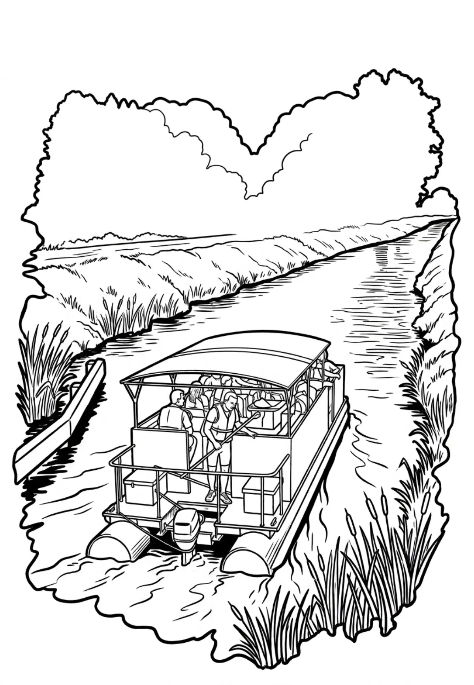

Baťův kanál
Zlínský kraj · 170 m n. m.

technická památka · #002
Baťův kanál neboli průplav Otrokovice-Rohatec je historická vodní cesta vybudovaná v letech 1934–1938 v délce 52 km, která spojovala Otrokovice se Sudoměřicemi, kde se překládalo hnědé uhlí z železničních vagonů do lodí a remorkéry přepravovalo do Otrokovic. Do Rohatce a Hodonína byla tato vodní cesta splavněna v roce 2025, téměř po 87 letech od jejího zprovoznění.